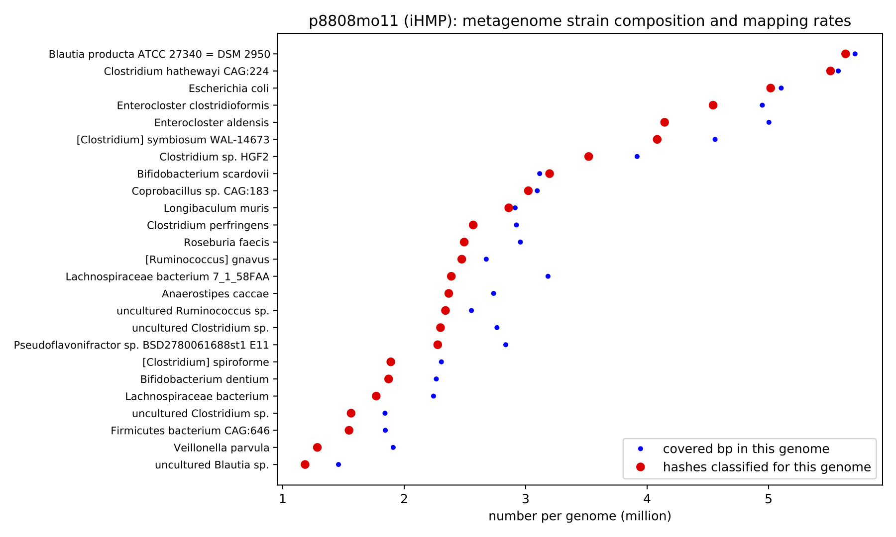

Welcome to genome-grist!


genome-grist is software that automates a number of tedious metagenome tasks related to reference-based analyses of Illumina metagenomes.
What can genome-grist do?
You can use genome-grist to:
-
find out what genomes are in a metagenome!
-
estimate how much of the metagenome will map to reference genomes!
-
map reads to each genome and summarize the results across genomes!
-
summarize the taxonomic composition of a metagenome!
genome-grist automates the analysis of public data, and will automatically access metagenomes from the SRA and genomes from Genbank. genome-grist supports both the NCBI and GTDB taxonomies. You can also use your own metagenomes and genomes.
Quickstart
Please see a genome-grist quickstart.
Example figures and output
The figure below shows the strain composition of a gut microbiome from the iHMP. This figure was autogenerated by genome-grist; the metagenome and all relevant genomes were downloaded and processed automatically.

Configuring genome-grist
Please see Configuring a genome-grist project.
Running genome-grist
You can run genome-grist on a config file like so:
genome-grist run <config file> <target> [ <target> ... ]
The four top-level targets are:
summarize_gather- summarize metagenome contents using sourmash & k-merssummarize_mapping- summarize metagenome contents using mappingsummarize_tax- summarize metagenome contents using k-mer-based taxonomysummarize- runsummarize_gather,summarize_mapping, andsummarize_tax
These all produce reports in the reports/ subdir of the configured output dir.
You can print out a list of documented targets by omitting the target altogether:
genome-grist run <config file>
genome-grist has many undocumented intermediate targets. You can print them all out by using run with the target print_rules
genome-grist run <config file> print_rules
Output files
genome-grist produces many different output files with lots of useful information - please see A guide to genome-grist output files!
Additional information
Preprints and publications
genome-grist was used extensively in the preprint Lightweight compositional analysis of metagenomes with FracMinHash and minimum metagenome covers, Irber et al., 2022.
For now, Irber et al., 2022 is the primary citation for genome-grist. Any use of genome-grist should be cited as follows:
Lightweight compositional analysis of metagenomes with FracMinHash and minimum metagenome covers.
Luiz Carlos Irber, Phillip T Brooks, Taylor E Reiter, N Tessa Pierce-Ward, Mahmudur Rahman Hera, David Koslicki, C. Titus Brown.
bioRxiv 2022.01.11.475838; doi:10.1101/2022.01.11.475838
Resource requirements
Disk space: genome-grist makes about 3-4 copies of each SRA metagenome analyzed.
Memory: the genbank search step on all of genbank takes ~120 GB of RAM. On GTDB, it's much, much less. Other than that, the other steps are all under 10 GB of RAM.
Time: This is largely dependent on the size of the metagenome; 100m reads takes a few hours. The processing of multiple data sets can be done in parallel with -j, as well, although you probably want to specify resource limits. For example, here is the command that we use on our HPC:
genome-grist run <config> -k --resources mem_mb=145000 -j 16
to run in 150GB of RAM, which will run at most one Genbank search at a time.
Support and help
We like to support our software!
That having been said, genome-grist is still in beta. Please be patient and kind :).
Please ask questions and add comments on the github issue tracker for genome-grist.
Why the name grist?
'grist' is in the sourmash family of names (sourmash, wort, distillerycats, etc.) See Grist in Wikipedia.
(It is not named for the computing grist!)
Installing in developer mode
You can run genome-grist from a working directory (e.g. a clone of the git repository) by using pip to install it in editable mode:
pip install -e .
in which case your genome-grist installation will track changes and updates in the working directory.
Or you can pip install the latest version from Github like so:
pip install git+https://github.com/dib-lab/genome-grist.git
What software and databases does genome-grist use?
genome-grist uses the sourmash software extensively, and is built in Python on top of the snakemake workflow system.
genome-grist uses fastp and minimap to do error trimming and short-read mapping.
Output reports are constructed using Jupyter Notebook and matplotlib.
The default search databases used for genome-grist are based on sequences from Genbank and taxonomies from Genbank and GTDB. The databases are provided by the sourmash project.
We develop genome-grist at github.com/dib-lab/genome-grist.
Support and funding
genome-grist was developed with support from Grant GBMF4551 from the Gordon and Betty Moore Foundation, Grant R01HG007513 from the NIH NHGRI, and Grant R03OD030596 from the NIH Common Fund.
CTB September 2022